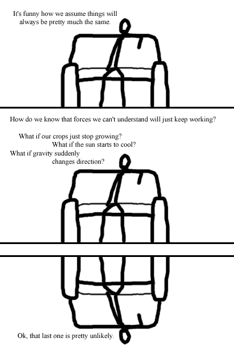

Comic JK 48
When I Feel Like It
⇤
<
?
>
⇥

⇤
<
?
>
⇥
Forum
.
RSS
.
Digg
.
Facebook
.
Reddit
.
Twitter
.
Stumbleupon
Gravity only attracts because the particle that mediates it has spin 2, so like the Yukawa interaction (spin 0) it is only attractive. (See Peskin & Schroeder (a real physics textbook)) Gravity doesn't repel for the same reason that my computer doesn-SYSTEM ERROR Gravity isn't there. It's just a superimposed theory which quantum physics CLEARLY disproves. Who the hell is that guy talking to? This is just another blog post with a copy-paste picture. >He's not talking; note the lack of speech bubbles. I thought gravity wasn't explained as a force so much as bending space so that objects sort of fall into massive objects. > Much like your mom why would the fall if there was no gravity? > Congratulations. You have just found the flaw in General Relativity. There's a comic about this (xkcd.com/675). Gravity always forms perfectly, while everything else has the potential to have it's energy escape outwards, creating a repelling effect? Because Gravity is a screwed up force, just like the weak force, and your mom, and there are some things that just can't be explained in this universe.... now lets see how long it takes for someone to get a nobel prize for saying that exact thing... eh? xkcd rocks. Gravity is the weakest force. It's the wimp of physics. It only attracts because gravity sucks! kinda sucky comic man What if your mother suddenly stops loving my dick?